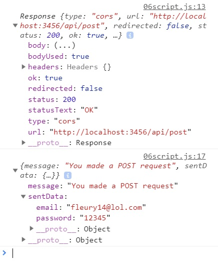

Ealier in class we went over the difference between a GET request and a POST request; A GET request recieves data but doesn't send anything to server other than the base request. A POST request is where we actually send data to the server as part of our request, we hit the API, the data is processed by the server, and a response is sent back.
Unfortunately, there are not a lot of APIs that allow you to send POST requests for free. This is because, unlike a get request which only sends data back to the user, a POST request will recieve and process data sent by the user. This means that someone could maliciously send bad data to a server. Therefore, I will only be able to demonstrate what a POST request will look like.
Another important aspect of POST request to know is that because a server is recieving data (commonly known as a payload), there are some security measures that are in place both on a server and in your browser that I will go over.
All of that said, let's take a look at an example of me making a POST request to a local server of mine:
fetch(('http://localhost:3456/api/post'), { // Pass an options object into fetch
method: 'POST', // Type of request, defaults to 'GET'
mode: 'cors', // Let fetch know this will be cross-origin
headers: {
'Content-Type': 'application/json; charset=UTF-8' // Set headers to let the API kow what kind of data we are sending
},
body: JSON.stringify({ // Define our payload
email: "fleury14@lol.com",
password: "12345"
})
.then( response => {
console.log(response);
return response.json();
})
.then( jsonResp => {
console.log(jsonResp);
})
.catch( err => {
console.log(err);
});
It sure is, lets go over it step by step.
The first thing to know is that after the address of the API, we are passing in an object that acts as a set of options for the fetch command. This is a very common practice when dealing with third-party modules if you get into NodeJS. Each one of those properties refers to information that we are defining about our POST request. Lets check out those properties.
The type of request we are making. The default is GET which is why we didnt specify that with our request earlier (more on that later). Since this is a POST request, thats what we put here...
CORS stands for Cross-Origin Resrouce Sharing. It is a fancy way of saying that we are making a request whos destination is different than the where the request originated. This may sound weird at first, but if you think about how you write code in JavaScript and then link it on the page, you know that the Javascript you made came from your app. It's executing code on the page that has the same origin.
The reason why even browsers tend to freak out over execution of code that doesn't seem to come from the app itself, this can be the sign of a common security risk where a malicious user tries to inject their own code into your app. This can happen with both servers, and injection of code into a webpage. As a result, browsers like Chrome and Firefox institute some safe guards to deal with this.
In addition to letting our browser and server know that we're executing a cross-origin request, we also specify what type of data we are sending. There are a few common ones:
We set this value to the 'Content-Type' header below. You will learn more about headers when you start to work in building server-side code.
Here is the proverbial meat and potatoes; this is the object that will be examined by the server. We wrap it in a JSON.stringify() to convert that object to a string because thats how the fetch command processes a payload: as a string. It will later get parsed back to an object behind the scenes.
While using JSON.stringify() is used with fetch, when you make POST requests with other techniques, you may not always be stringifying the object.
I know I'm talking about a lot of things that fall a little beyond the scope of vanillaJS, and it's not as important that you know every header you can send with a POST request. It's more important that you understand the existence and general purpose of this stuff so you can refer back to it later.
This is good and all, but what does the end result look like?
Glad you asked!
I whipped up a super basic API that simply spits back the body that was sent to it. Here is the result of the fetch method posted above:
We sent a request to an API including a payload and we see the result of an API processing that data. Super!
This is not the fetch I'm used to.